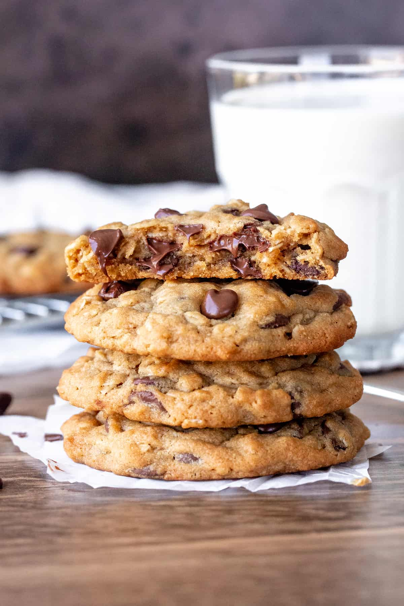

Chocholate Chips Peanut Butter Oatmeal Cookies

Delicious PB Oatmeal Chocolate Chip Cookies.
Consider yourself warned: these cookies are exploding with flavor, unapologetically thick, and hopelessly irresistible.
They’re guaranteed to satisfy almost every cookie craving.
INGREDIENTS
- 1 and 1/2 cups (188g) all-purpose flour (spooned & leveled)
- 1 teaspoon baking powder
- 1 teaspoon baking soda
- 1 teaspoon salt
- 1 cup (16 Tbsp; 226g) unsalted butter, softened to room temperature
- 1 cup (200g) granulated sugar
- 1/2 cup (100g) packed light or dark brown sugar
- 2 large eggs, at room temperature
- 1 cup (260g) creamy peanut butter
- 2 teaspoons pure vanilla extract
- 2 cups (170g) old-fashioned whole rolled oat
- 2 and 1/2 cups (450g) semi-sweet chocolate chips, plus more for topping if desired
INSTRUCTIONS
- Whisk the flour, baking powder, baking soda, and salt together in a medium bowl. Set aside.
- n a large bowl using a hand mixer or a stand mixer fitted with a paddle attachment, beat the butter on medium-high speed until smooth, about 1 minute. Add the granulated sugar and brown sugar and beat on medium-high speed until creamed, about 2 minutes. Add the eggs, peanut butter, and vanilla and beat on high speed until combined, about 1 minute. Scrape down the sides and up the bottom of the bowl and beat again as needed to combine.
- Add the dry ingredients to the wet ingredients and mix on low until combined. With the mixer running on low speed, add the oats. Once combined, beat in the chocolate chips. Dough will be thick and sticky. Cover and chill the dough for at least 20 minutes in the refrigerator (and up to 4 days). If chilling for longer than 1 hour, allow to sit at room temperature for at least 30 minutes before rolling and baking because the dough will be quite hard.
- Preheat oven to 350°F (177°C). Line baking sheets with parchment paper or silicone baking mats. Set aside.
- Scoop balls of dough, 2 Tablespoons of dough per cookie, and arrange 3 inches apart on the baking sheets. Bake for 12-14 minutes until lightly browned on the sides. The centers will look very soft.
- Remove from the oven and allow to cool on baking sheet for 5 minutes before transferring to a wire rack to cool completely. While the cookies are still warm, I like to press a few more chocolate chips into the tops—this is only for looks!
- Cookies stay fresh covered at room temperature for up to 1 week.